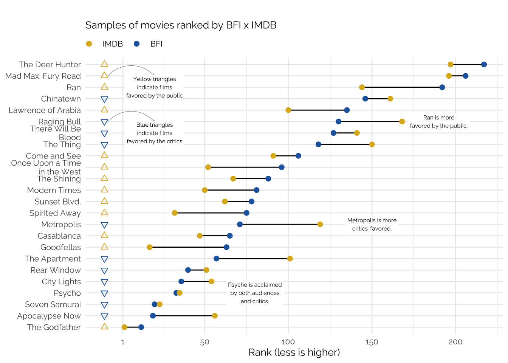

Movie rankings
While some find it odd to rank movie tastes, I’ve always enjoyed “greatest of all times” lists. When not taken too literally, these lists provide a resourceful almanac of good movies, including classics, and culturally relevant movies. By construction, these lists will always be lacking and always be biased: it’s a subjective evaluation of the best of the best films after all.
Traditionally, these lists were penned by movie critics or experts; more recently, however, there are several “greatest of all times” lists voted by the public. Perhaps the most well known of these is the Top 250 IMDB. As of December 2024, the top 250 films alone aggregate almost 180 million votes.
When comparing these lists, the ones made by critics and those voted by the broader public, one notices a kind “temporal bias” in the rankings. New movies, released in the past 10-15 years, rarely appear in prestigious lists such as the BFI’s Greatest Films. In fact, in it’s most recent edition, published in 2022, only 24 of the 264 films were released in the 21st Century (less than 10%). On the flip side, online rankings such as the Top 250 IMDB are flooded with new releases. Almost 36% of the films featured in the Top 250 IMDB were released from 2001 to 2021.
In this post I delve into the data to try to visualize these patterns. Are movie critics biased towards a certain period of cinema? Are new movies overrated? Are they underrated?
Rankings
There are several “greatest movies of all time” lists. Comparing them directly is often impossible due to conflicting methodologies. For simplicity, I’ll delve mostly into the Top 250 IMDB and the BFI Greatest Films of All Time. IMDB’s ranking compiles the largest number of online votes and has a relatively sturdy methodology for both its ratings and its rankings. The BFI list compiles votes from academics, critics, curators, archivists, and programmers. Its most recent edition was published in 2022.
The lists are relatively comparable in size: IMDB’s has (obviously) 250 films while BFI’s has 264. While BFI’s list has ties, I ignore these to make comparisons simpler.
In a latter part of the post I extend the analysis to other lists published by media outlets such as Variety and TimeOut and also to other online sites such as Letterboxd.
The data
Getting all the data involves a lot of webscraping. More information on the data collection process can be found on my Github.
Critics vs Public
Recency bias?
Looking at the data by decade seems to reveal a clear pattern. BFI’s list peaks around the 1960’s, while IMDB’s list peaks around the 2000’s. There’s a small bump in the 1950’s but nothing noteworthy.
While one could argue that IMDB’s ranking suggests some level of recency bias among the public, the numbers might also be a reflection of (1) the age demographic of online voters; (2) the (lack of) availability of older films, specially in mainstream streaming services.
Convergence
Going into greater details reveals some curious features about how these lists compare. Some films appear to be appreciated by both the public and the critics. Films like Kurosawa’s Seven Samurai, Hitchcock’s Psycho, and Coppola’s The Godfather all rank highly in both lists.
There are, of course, divergences: some films, like Metropolis (1927) and The Apartment (1960) are slightly favored by the BFI’s critics; meanwhile, Ran (1985) and Modern Times (1936) are favored by the public. These divergences don’t seem to correlate directly with the year of release of each movie or even with its director.
Its important to note that rankings work in a counter-intuitive fashion to most graphics, since the best (highest-ranking) films are associated with lower numbers and appear on the left. To make reading the graphics easier, colors and symbols were used to identify which films ranked higher on each list.

Divergence
Looking even deeper into the discrepancies between the lists reveals an interesting trend. The movies on the top of the plot are overwhelmingly favored by the critics: these include Tokyo Story, Citizen Kane, Barry Lyndon, and The Third Man. Movies more to the bottom of the list are favorites of the public, including: Raiders of Lost Ark, The Matrix, Star Wars - New Hope, and Pulp Fiction.
While year of release seems to play a significant role, one can also theorize that the content of these films plays a much larger one.

Finally, it’s also important to note movies that appear exclusively in one list. These last two tables more clearly reflect the difference between critically appraised movies and favorites of the public.
The best ranking films in BFI’s list that don’t appear at all in IMDB’s list include The Rules of the Game (1939), Persona (1966), and Mulholland Drive (2001). This is definitely a very snobish list, but again, year of release doesn’t seem to matter much.
| Name | Year | Rank (BFI) |
|---|---|---|
| Jeanne Dielman, 23, quai du commerce, 1080 Bruxelles | 1975 | 1 |
| In the Mood for Love | 2000 | 5 |
| Beau Travail | 1999 | 7 |
| Mulholland Drive | 2001 | 8 |
| Man with a Movie Camera | 1929 | 9 |
| Sunrise | 1927 | 11 |
| The Rules of the Game | 1939 | 13 |
| Cléo from 5 to 7 | 1962 | 14 |
| The Searchers | 1956 | 15 |
| Meshes of the Afternoon | 1943 | 16 |
| Close-Up | 1990 | 17 |
| Persona | 1966 | 18 |
| Late Spring | 1949 | 22 |
| Playtime | 1967 | 23 |
| Do the Right Thing | 1989 | 24 |
The best ranking films in IMDB’s list that don’t appear at all in BFI’s list include The Lord of the Rings trilogy (2001-2003), The Shawshank Redemption (1994), and several Christopher Nolan movies. Outside of Lumet’s 12 Angry Men (1957) most of this list heavily skewed to the 1990’s onwards.
| Name | Year | Rank (IMDB) |
|---|---|---|
| The Shawshank Redemption | 1994 | 1 |
| The Dark Knight | 2008 | 3 |
| 12 Angry Men | 1957 | 5 |
| Schindler's List | 1993 | 6 |
| The Lord of the Rings: The Return of the King | 2003 | 7 |
| The Lord of the Rings: The Fellowship of the Ring | 2001 | 9 |
| Forrest Gump | 1994 | 11 |
| The Lord of the Rings: The Two Towers | 2002 | 12 |
| Fight Club | 1999 | 13 |
| Inception | 2010 | 14 |
| Star Wars: Episode V - The Empire Strikes Back | 1980 | 15 |
| One Flew Over the Cuckoo's Nest | 1975 | 18 |
| Se7en | 1995 | 19 |
| Interstellar | 2014 | 20 |
| Dune: Part Two | 2024 | 21 |
Critics x Public - 2
Gathering data from other sources reveals more curious patterns. The plot below aggregates data from 8 different rankings: four of them voted by critics and four of them voted by the public1. The latter are online polls voted by users and for simplicity are all shown in yellow; the former are polls voted by experts and critics and are shown in blue.

All four lists organized by critics present similar characteristics. They are shaped almost like a triangle with its vertex somewhere around the 1960’s with a small outlier peak in the late 1990’s. AFI’s ranking differs slightly from this pattern exhibiting a relatively larger peak in the 1940’s.
The rankings voted by the public are much more scattered. Criticker’s ranking is the most similar to the critics’. It has a large share of films in the late 1940’s and 1950’s, but fewer in the 1960’s and 70’s relative to the critics.
IMDB’s ranking, as seen previously, is heavily skewed to right, with several films from the 1990’s and 2000’s. Empire’s ranking is similar in shape to IMDB’s, almost resembling a ladder that peaks in 1999.
Finally, Letterboxd’s list seems to be a mixture of Criticker’s 1950’s bias with IMDB’s 1990’s bias.
Lists inside lists
Similarly to the BFI x IMDB comparison, these lists aren’t directly comparable. Most importantly, they were (1) published at different times2; and (2) have different sample sizes3.
A simple way to compare the similarity between these lists is to count the overlaps in films. That is, how many films in list A are present in list B. To overcome the differences in sample size, I truncate the larger list by the smaller list size. When comparing, for instance, the Variety Top 100 with the IMDB Top 250, I simply truncate the IMDB list at 100.
This should work well for most comparisons except for AFI and Empire. AFI’s ranking lists only American movies up to 2000; and Empire ranks movies only up until 2008.
The plot below shows this simple measure of overlap where the number represents the percentage of overlap between a pair of lists. This means that 64.9% of the films listed on Criticker also appear on Letterboxd’s Top 250.
Overall, the public rankings are most similar to other public rankings and dissimilar to critic’s rankings. Letterboxd has a high similarity with Criticker and IMDB and a low similarity with Variety and Timeout. Likewise, Variety’s list is most similar to AFI, BFI, and Timeout.
Conclusion
This was mostly a “fun” post comparing lists of movie rankings.
Differences Between Critic and Public Rankings: Movie rankings created by critics and the public show clear differences. Critics’ lists tend to be quite consistent and often favor older films. In contrast, rankings based on public online votes are also similar to each other, but generally give more weight to recent films.
The Favoritism of Recent Movies in Public Rankings: Online public rankings tend to highlight newer movies, especially those from the 2000s. This trend may be influenced by the age demographic of voters and the greater availability of more recent movies in online streaming platforms relatively to older movies.
Experts, critics, and the Golden Age of Movies: Rankings by experts and critics are generally aligned, with similar films appearing in both lists. These rankings tend to include fewer recent releases, with most of the top films coming from the 1940s, 1960s, and 1970s.
Limitations: as noted above, only a handful of these lists are directly comparable. Each list has a different methodology and was published at different times. The online lists (IMDB, Criticker, and LetterBoxd) are the most comparable.
Footnotes
To be fair, Empire’s list combines both critics and general public. The numbers however, skew it toward the public.↩︎
The Criticker (2022), Letterboxd (2022), IMDB (2024), TimeOut (2024), BFI (2022), and Variety (2022) lists are relatively comparable among themselves. Empire’s ranking was published in 2008. AFI’s ranking is more recent but doesn’t include films released after the 2000’s.↩︎
For some reason 250, and its multiples, is a favorite among the public and 100 is preferred by the critics.↩︎